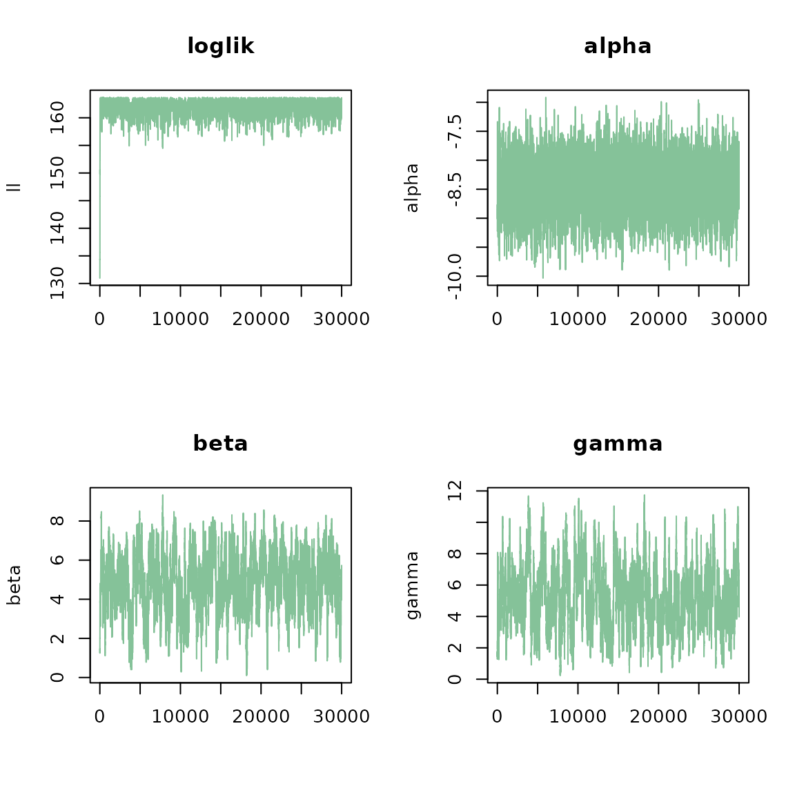
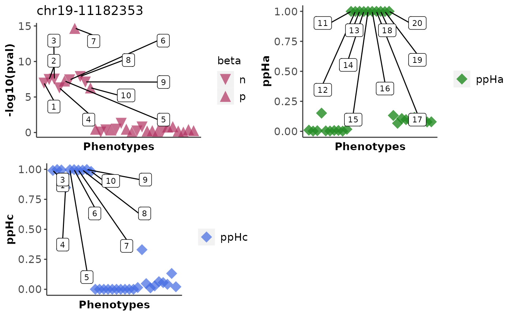
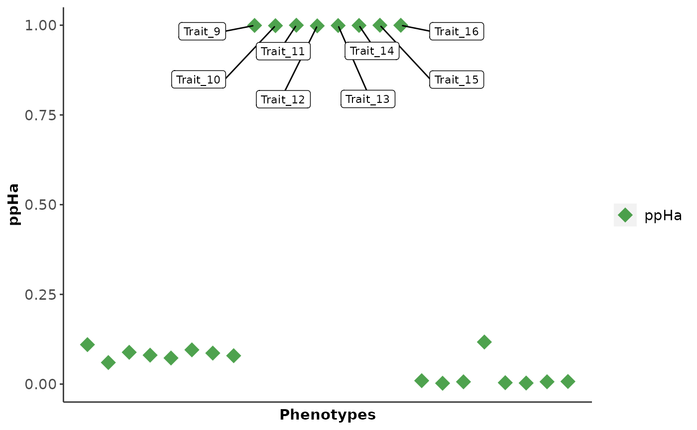
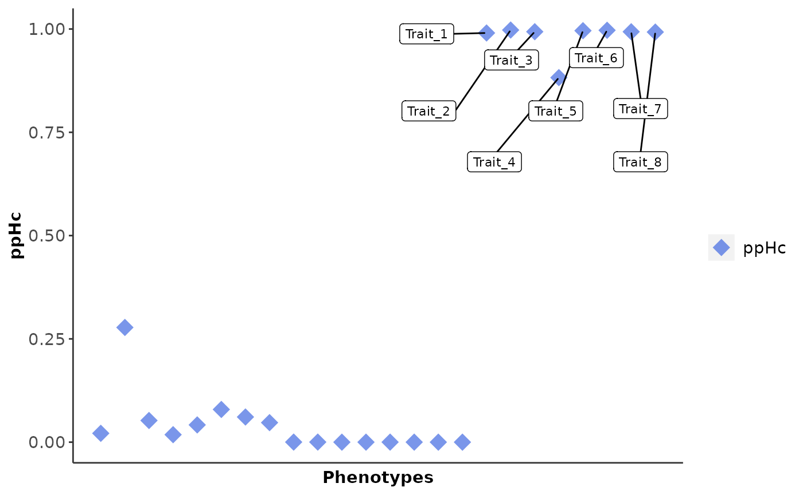

vignettes/HierarchicalPriors_04.Rmd
HierarchicalPriors_04.RmdThe hierarchical model is ideal when a large set of variants and phenotypes are available i.e., a phenome-wide association study with a set of variants which are previously known to have a functional role or have been implicated in a disease. Here we show how to use cophescan to infer hierarchical priors on a small test dataset.
data("cophe_multi_trait_data")
trait_dat = cophe_multi_trait_data$summ_stat$Trait_1
str(trait_dat)
#> List of 8
#> $ beta : Named num [1:1000] -0.01369 0.01666 0.09057 -0.00571 -0.05606 ...
#> ..- attr(*, "names")= chr [1:1000] "chr19-11173352" "chr19-11173626" "chr19-11173716" "chr19-11173807" ...
#> $ varbeta: Named num [1:1000] 0.000516 0.000399 0.003124 0.000419 0.000473 ...
#> ..- attr(*, "names")= chr [1:1000] "chr19-11173352" "chr19-11173626" "chr19-11173716" "chr19-11173807" ...
#> $ z : Named num [1:1000] -0.603 0.834 1.62 -0.279 -2.578 ...
#> ..- attr(*, "names")= chr [1:1000] "chr19-11173352" "chr19-11173626" "chr19-11173716" "chr19-11173807" ...
#> $ snp : chr [1:1000] "chr19-11173352" "chr19-11173626" "chr19-11173716" "chr19-11173807" ...
#> $ MAF : Named num [1:1000] 0.2614 0.4871 0.0318 0.4046 0.3042 ...
#> ..- attr(*, "names")= chr [1:1000] "chr19-11173352" "chr19-11173626" "chr19-11173716" "chr19-11173807" ...
#> $ type : chr "cc"
#> $ N : num 20000
#> $ s : num 0.5
querysnpid <- cophe_multi_trait_data$querysnpid
LD <- cophe_multi_trait_data$LDThe first step is preparing the input for the hierarchical model
which are the log Bayes factors: lBF.Ha and lBF.Hc. We will use
cophe.susie.lbf to extract Bayes factors estimated using
SuSIE. Note: When there are no credible sets identified with SuSIE the
function internally calculates lBF.Ha and lBF.Hc using the Approximate
Bayes Factor method.
## Hide print messages from coloc
res.multi.lbf <- list()
for (trait_idx in seq_along(cophe_multi_trait_data$summ_stat)){
querytrait_ss <- cophe_multi_trait_data$summ_stat[[trait_idx]]
# Here LD is the same
querytrait_ss$LD <- LD
trait_variant_pair <- paste0('Trait', trait_idx, '_', querysnpid)
res.multi.lbf[[trait_variant_pair]] <- cophe.susie.lbf(querytrait_ss, querysnpid = querysnpid, querytrait = paste0('Trait_', trait_idx))
}
res.multi.lbf.df = bind_rows(res.multi.lbf)
head(res.multi.lbf.df)
#> lBF.Ha lBF.Hc nsnps querysnp querytrait hit1
#> 1: 15.31003 11.95277 1000 chr19-11182353 Trait_1 chr19-11182353
#> 2: 16.43401 13.00673 1000 chr19-11182353 Trait_2 chr19-11182353
#> 3: 17.36744 13.13794 1000 chr19-11182353 Trait_3 chr19-11182353
#> 4: 14.45423 10.44441 1000 chr19-11182353 Trait_4 chr19-11182353
#> 5: 15.82635 12.54912 1000 chr19-11182353 Trait_5 chr19-11182353
#> 6: 16.23052 12.88257 1000 chr19-11182353 Trait_6 chr19-11182353
#> hit2 typeBF idx1 idx2
#> 1: chr19-11182144 susieBF 1 1
#> 2: chr19-11183133 susieBF 1 1
#> 3: chr19-11189906 susieBF 1 1
#> 4: chr19-11182538 susieBF 1 1
#> 5: chr19-11176397 susieBF 1 1
#> 6: chr19-11182135 susieBF 1 1Note:
cophe.susie or cophe.single
can also be used as input to the hierarchical model as it has all the
fields required for the input. This would be useful when you would like
to compare results from the fixed priors to those obtained from priors
inferred using the hierarchical model. [Swap cophe.susie
for cophe.susie.lbf above and instead of bind_rows do :
res.multi.lbf.df = multitrait.simplify(res.multi.lbf)].The input df for the multi.dat arguments should contain the following fields: “lBF.Ha”,“lBF.Hc” and “nsnps”.
# covar=FALSE
## Set covar to TRUE to include covariates
covar=TRUE
covar_vec = cophe_multi_trait_data$covar_vec
cophe.hier.res <- run_metrop_priors(res.multi.lbf.df, avg_posterior=TRUE, avg_pik = TRUE, covar_vec = covar_vec, covar = covar, nits = 30000)
names(cophe.hier.res)
#> [1] "ll" "parameters" "avg.posterior" "avg.pik"
#> [5] "data" "nits" "thin" "covar_vec"Note: Setting posterior or pik to TRUE is memory intensive for very large datasets
loglik <- cophe.hier.res$ll
parameters <- cophe.hier.res$parameters
col <- rgb(red = 0.4, green = 0.7, blue = 0.5, alpha = 0.8)
### store user parameters
old_par = par(no.readonly = TRUE)
## plot diagnostics
par(mfrow=c(2,2))
plot(seq_along(loglik), loglik, main="loglik",type="l", col=col, ylab = "ll", xlab="")
plot(seq_len(ncol(parameters)), parameters[1,], main="alpha",type="l", col=col, ylab = "alpha", xlab="")
plot(seq_len(ncol(parameters)), parameters[2,], main="beta",type="l", col=col, ylab = "beta", xlab="")
if (covar)
plot(seq_len(ncol(parameters)), parameters[3,], main="gamma",type="l", col=col, ylab = "gamma", xlab="")
### reset user parameters
par(old_par)cophe.hier.res$avg.posterior contains the posterior
probabilities of the hypotheses : \(H_n\), \(H_a\) and \(H_c\) for the queryvariant/querytrait pairs
obtained from the hierarchical model.
res.post.prob = cbind(cophe.hier.res$avg.posterior, cophe.hier.res$data)We can use the cophe.hyp.predict function to predict the
hypothesis given the posterior probabilities. The cophe.hyp.call column
shows the predicted hypothesis for each query trait-query variant
pair.
res.hier.predict <- cophe.hyp.predict(as.data.frame(res.post.prob ))
#> Hc.cutoff = 0.6
#> Hn.cutoff = 0.2
col_disp <- c( "PP.Hn", "PP.Ha", "PP.Hc", "nsnps", "querysnp", "querytrait", "typeBF", "grp", "cophe.hyp.call")
knitr::kable(res.hier.predict[, col_disp], row.names = FALSE, digits=3)| PP.Hn | PP.Ha | PP.Hc | nsnps | querysnp | querytrait | typeBF | grp | cophe.hyp.call |
|---|---|---|---|---|---|---|---|---|
| 0.871 | 0.111 | 0.017 | 1000 | chr19-11182353 | Trait_17 | ABF | chr19-11182353_Trait_17 | Hn |
| 0.651 | 0.059 | 0.289 | 1000 | chr19-11182353 | Trait_18 | ABF | chr19-11182353_Trait_18 | Hn |
| 0.864 | 0.090 | 0.046 | 1000 | chr19-11182353 | Trait_19 | ABF | chr19-11182353_Trait_19 | Hn |
| 0.904 | 0.082 | 0.014 | 1000 | chr19-11182353 | Trait_20 | ABF | chr19-11182353_Trait_20 | Hn |
| 0.892 | 0.074 | 0.034 | 1000 | chr19-11182353 | Trait_21 | ABF | chr19-11182353_Trait_21 | Hn |
| 0.835 | 0.098 | 0.067 | 1000 | chr19-11182353 | Trait_22 | ABF | chr19-11182353_Trait_22 | Hn |
| 0.858 | 0.088 | 0.054 | 1000 | chr19-11182353 | Trait_23 | ABF | chr19-11182353_Trait_23 | Hn |
| 0.878 | 0.080 | 0.041 | 1000 | chr19-11182353 | Trait_24 | ABF | chr19-11182353_Trait_24 | Hn |
| 0.000 | 0.999 | 0.000 | 1000 | chr19-11182353 | Trait_9 | susieBF | chr19-11182353_Trait_9 | Ha |
| 0.001 | 0.999 | 0.000 | 1000 | chr19-11182353 | Trait_10 | susieBF | chr19-11182353_Trait_10 | Ha |
| 0.000 | 1.000 | 0.000 | 1000 | chr19-11182353 | Trait_11 | susieBF | chr19-11182353_Trait_11 | Ha |
| 0.002 | 0.998 | 0.000 | 1000 | chr19-11182353 | Trait_12 | susieBF | chr19-11182353_Trait_12 | Ha |
| 0.001 | 0.999 | 0.000 | 1000 | chr19-11182353 | Trait_13 | susieBF | chr19-11182353_Trait_13 | Ha |
| 0.000 | 0.999 | 0.000 | 1000 | chr19-11182353 | Trait_14 | susieBF | chr19-11182353_Trait_14 | Ha |
| 0.000 | 1.000 | 0.000 | 1000 | chr19-11182353 | Trait_15 | susieBF | chr19-11182353_Trait_15 | Ha |
| 0.000 | 1.000 | 0.000 | 1000 | chr19-11182353 | Trait_16 | susieBF | chr19-11182353_Trait_16 | Ha |
| 0.000 | 0.010 | 0.990 | 1000 | chr19-11182353 | Trait_1 | susieBF | chr19-11182353_Trait_1 | Hc |
| 0.000 | 0.002 | 0.998 | 1000 | chr19-11182353 | Trait_2 | susieBF | chr19-11182353_Trait_2 | Hc |
| 0.000 | 0.006 | 0.994 | 1000 | chr19-11182353 | Trait_3 | susieBF | chr19-11182353_Trait_3 | Hc |
| 0.000 | 0.146 | 0.854 | 1000 | chr19-11182353 | Trait_4 | susieBF | chr19-11182353_Trait_4 | Hc |
| 0.000 | 0.004 | 0.996 | 1000 | chr19-11182353 | Trait_5 | susieBF | chr19-11182353_Trait_5 | Hc |
| 0.000 | 0.003 | 0.997 | 1000 | chr19-11182353 | Trait_6 | susieBF | chr19-11182353_Trait_6 | Hc |
| 0.000 | 0.007 | 0.993 | 1000 | chr19-11182353 | Trait_7 | susieBF | chr19-11182353_Trait_7 | Hc |
| 0.000 | 0.007 | 0.993 | 1000 | chr19-11182353 | Trait_8 | susieBF | chr19-11182353_Trait_8 | Hc |
Use the cophe_plot function to return -log10(pval), ppHa
and ppHc PheWAS plots from the cophescan output.
res.plots = cophe_plot(res.hier.predict, traits.dat = cophe_multi_trait_data$summ_stat, querysnpid = querysnpid, query_trait_names = paste0('Trait_', 1:24))
# if (!require(ggpubr)) {
# install.packages("ggpubr")
# }
# ggpubr::ggarrange(res.plots$pval, res.plots$ppHa, res.plots$ppHc, ncol = 2, nrow = 2)
Note: For large datasets, it’s not feasible to input all
coloc-structured data into “traits.dat” at once. Instead, use a loop and
run the “get_beta” function over all the trait-variant pairs, and
provide the resulting data frame (after binding the rows) as the
“beta_p” argument in cophe_plot:
# beta_p_list <- lapply(seq_along(cophe_multi_trait_data$summ_stat), function(x) get_beta(list(cophe_multi_trait_data$summ_stat[[x]]), querysnpid, names(cophe_multi_trait_data$summ_stat)[x]))
# ### the datsets need not be in a list as in cophe_multi_trait_data$summ_stat and can be stored independently.
# beta_p_df = bind_rows(beta_p_list)
# ### Make sure the query trait names in beta_p_df are the same as in res.hier.predict
# res.plots = cophe_plot(res.hier.predict, querysnpid = querysnpid, query_trait_names = beta_p_df$querytrait, beta_p = beta_p_df)